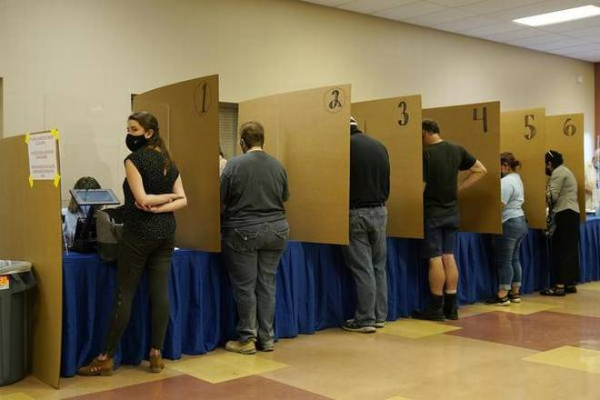

U.S. sees record 90 million early votes as Trump, Biden make late push
REUTERS
DETROIT/READING, NOVEMBER 01, 2020 07:56 IST
UPDATED: NOVEMBER 01, 2020 12:26 IST
The high number of early voters, about 65% of the total turnout in 2016, reflects intense interest in
the contest, with three days of campaigning left.

The high number of early voters, about 65% of the total turnout in 2016, reflects intense interest in the
contest, with three days of campaigning left.
A record 90 million Americans have voted early in the U.S. presidential election, data on Saturday
showed, as President Donald Trump and his Democratic rival Joe Biden campaigned across the country to
try to sway the few remaining undecided voters.
The high number of early voters, about 65% of the total turnout in 2016, reflects intense interest in
the contest, with three days of campaigning left.
Concerns about exposure to the coronavirus at busy Election Day voting places on Tuesday have also
pushed up the numbers of people voting by mail or at early in-person polling sites.
Opinion polls show Mr. Trump trailing former Vice President Biden nationally, but with a closer contest
in the most competitive states that will decide the election. Voters say the coronavirus is their top
concern.
Mr. Trump has repeatedly claimed without evidence that mail-in ballots are susceptible to fraud and has
more recently argued that only the results available on election night should count. In a flurry of
legal motions, his campaign has sought to restrict absentee balloting.
“I don’t care how hard Donald Trump tries. There’s nothing let me say that again there’s nothing that he
can do to stop the people of this nation from voting in overwhelming numbers and taking back this
democracy,” Mr. Biden said at a rally in Flint, Michigan, where he was joined by former President Barack
Obama for their first 2020 campaign event together.